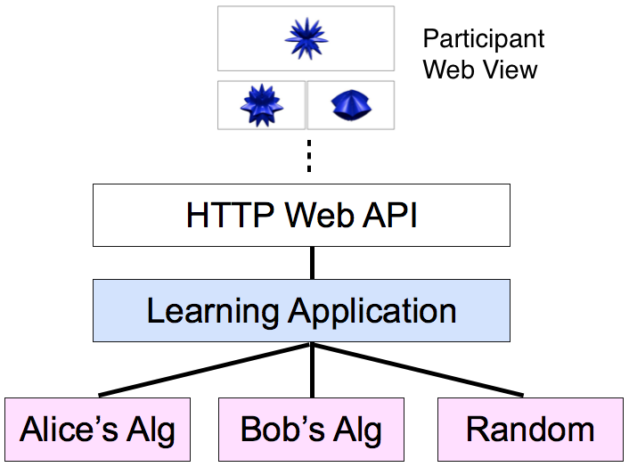

Develop
Implementing an algorithm is as simple as writing a few functions.
Interfaces required by active learning applications are also easily added to the system.
Evaluate
Implement multiple algorithms and evaluate or A/B test them simultaneously in real-time.
Computational (timing) performance alongside prediction performance.
Apply
Deploy your active-learning algorithms for web-scale applications. The New Yorker uses NEXT to help pick the cartoon caption contest winner.
You only need to worry about your algorithms, not how to design a reliable server for your application.
How does it work?
An application defines the active learning problem to be solved and manages the data flow to different algorithms.
Each algorithm shares the same inputs and outputs, but adaptively selects data according to its unique specifications.

Acknowlegements


The NEXT project is based at the University of Wisconsin-Madison. The development of the NEXT system was supported by the NSF grant IIS-1447449 and a Sandia National Labs Graduate Fellowship. Research on the active learning algorithms in NEXT was also partially supported by the NSF grant CCF-1218189 and the AFOSR grant FA9550-13-1-0138. The AMP Lab (UC Berkeley) and Amazon generously provided AWS computing resources for many experiments with NEXT.